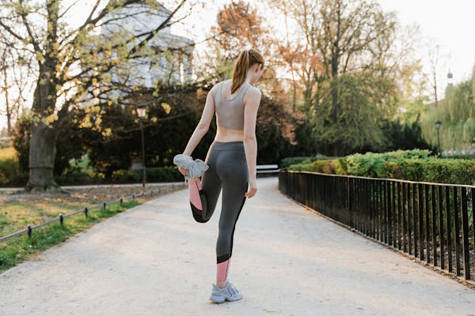

Getting Started with Running: Building Your First Stride

Whether you've never run before or are returning from a long hiatus, this beginner-friendly course is your safe and structured entry point into the world of running. No pressure, no comparisons — just solid guidance to help you get moving with confidence.
You'll learn how to choose shoes based on your gait, terrain preference, and budget — all demystified. We'll help you set weekly goals that are achievable, sustainable, and motivating. You’ll be introduced to warm-up and cool-down routines that protect your joints and prevent injuries, even if you’re only walking to start.
This course includes gentle movement tutorials, tips for syncing your breath with your steps, and guidance on how to listen to your body to avoid overtraining. By the end of it, you’ll be able to complete your first continuous run — no matter how short — and track your own growth, week by week.
- Choosing the right running shoes based on gait and terrain.
- Setting achievable weekly goals that motivate you, not stress you.
- Gentle warm-up and cool-down routines for joint protection.
- Breathing rhythms and body awareness tips.
- Progress tracking and when to push vs. rest.
Run Smart: Foundations of Form, Breathing, and Posture
This course is all about quality over quantity. Running efficiently means fewer injuries, better endurance, and a more enjoyable experience. We’ll break down common mistakes runners make — from heel-striking too hard to poor posture that saps energy — and show you exactly how to fix them.
You’ll get visual breakdowns of elite-level running form, posture drills you can do at home, and practice plans to help you implement what you learn. Breathing techniques like box breathing and rhythmic coordination are covered in-depth to help you avoid cramps and oxygen debt.
Whether you’re training for a 5K or simply want to feel lighter and stronger during runs, this course will transform how you move. Every week ends with a mini-challenge to test and reflect on your progress.
- Video breakdown of proper footstrike, arm swing, and head alignment.
- Breathing strategies (box breathing, rhythmic breathing) for endurance.
- Postural drills to correct slouching and boost efficiency.
- Techniques for uphill/downhill running without strain.
- Weekly challenges to track form consistency.
Mind & Motion: Preparing Your Body and Mind for the Road Ahead
This course addresses the mental and emotional side of running — often the hidden key to long-term consistency. You’ll learn to spot emotional fatigue, develop self-awareness, and build a running routine that works with your life, not against it.
Through daily mindset prompts, sleep and stress tracking, and guided reflection tools, you’ll become attuned to the signals your body and brain are sending. You’ll explore strategies for handling low-motivation days, building confidence, and mentally preparing for races or long runs.
We also dive into community connection: how mentorship, support groups, and shared milestones can boost morale and make running feel less lonely. By the end, you won’t just be physically stronger — you’ll be more resilient, mindful, and motivated than ever.
- Daily mindset journals and check-ins.
- Energy logging: how mood, sleep, and nutrition affect your runs.
- Stress recovery cycles and active rest techniques.
- Guided visualization for race prep and goal-setting.
- Support groups and mentor calls with advanced runners.